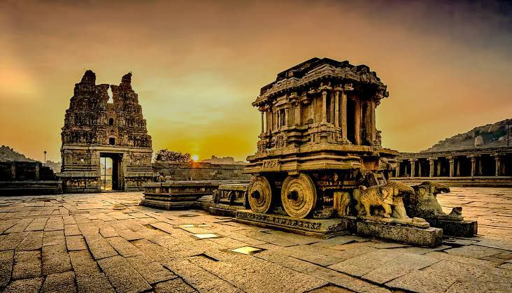
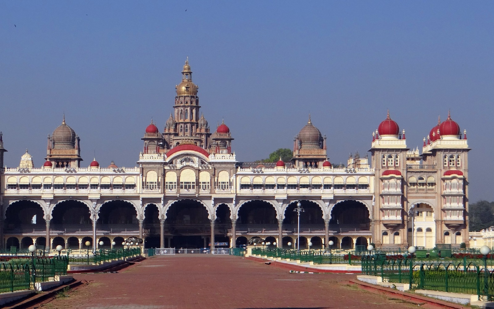
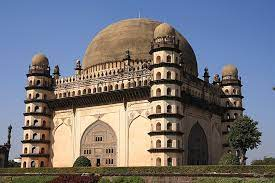
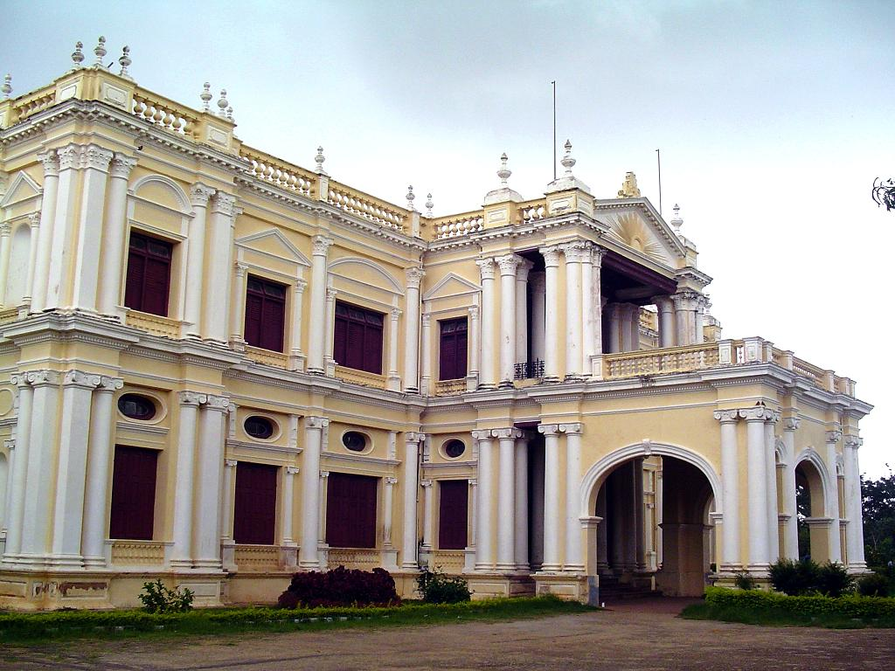

Hampi
Add ticket
View ticket
Hampi is a UNESCO World Heritage Site located in northern
Karnataka.
It was the capital of the Vijayanagara Empire in the 14th
century and is known for
its ancient temples, monuments, and ruins.
Mysore Palace
Add ticket
View ticket
Mysore Palace is a historical palace in the city of Mysore.
It is the official residence of the Wadiyar dynasty and is
known for its intricate architecture and beautiful gardens.
Gol Gumbaz
Add ticket
Gol Gumbaz, also written Gol Gumbad, is a 17th-century mausoleum located
in Bijapur, a city in Karnataka, India.
It houses the remains of Mohammad
Adil Shah, seventh sultan of the Adil Shahi dynasty, and some of his relatives.
Folklore Museum
Add ticket
The Folklore Museum at Mysore, India.
It is a museum which
exhibits folk art and crafts from all over the state of Karnataka